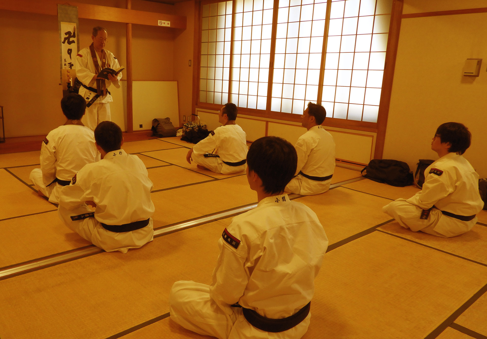

学び
少林寺拳法の目的
少林寺拳法の真の目的は「人づくり」です。
この人づくりとは肉体的な技術だけではなく、
人として精神面も健全に成長する事を目指しています。
具体的には以下のような人づくりです。
- 自分を信じる事ができる人
- 自分の考えをはっきり言えて行動できる人
- 他の人の事も考えて行動できる人
- 正義感と勇気と思いやりを持って行動できる人
- みんなとともに理解し協力し合う事ができる人
人としての成長
人づくりを目的としている少林寺拳法は、道場だけが活動の場ではありません。 自分の行動や自分の考えた事が正しいのか常に考え、 正しくない事を改める事が、自分自身を見直すきっかけとなり成長に繋がります。
日常生活の中で意識して行動すると、自分の行動が時には他人に迷惑をかけているといった事にも気づけます。 例えば玄関で靴を脱ぎ捨てた状態より、靴を揃えて置いた方が自分も他の人もすっきりした気持ちになれます。 「脱いだ靴を揃える」「他の人の靴にも気を配る」といったような事を意識して行動していく中で、 正しい行動が習慣となっていきます。
心を磨く
「あいさつ」は人間関係においてなくてはならないものです。 少林寺拳法では顔の前で手を合わせる「合掌礼」をあいさつとして行います。 これは礼の本質である、相手に敬意を持ち、お互いに認め合う心を表しています。 きちんと心からあいさつすれば、自然に姿勢が正しくなり、心も正しくなっていきます。
また挨拶や人と話す時は正しい言葉を使います。 言葉には「響き」があり、「響き」は話す人の人格を表します。 言葉は相手に気持ちを伝えるだけではなく、自分自身の心を表しています。 心は態度にも表れ、相手を敬い礼儀正しくすることで、心が正しくなっていきます。
あいさつ、言葉遣い、態度など、日常でも重要な事を練習の中で身につけ、 心を磨いていきます。